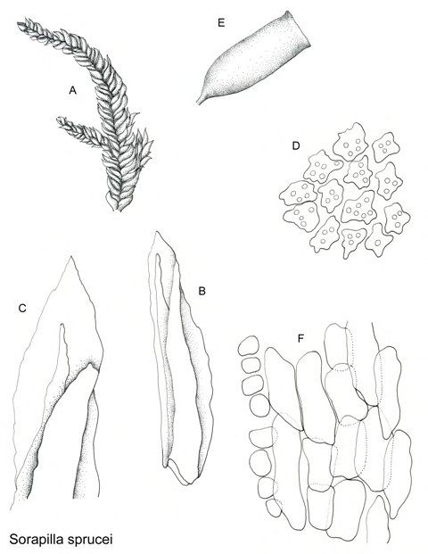

Sorapillaceae
No widely recognized common name
Sorapillaceae is a small, distinctive family of acrocarpous mosses belonging to the order Dicranales. It contains the single genus Sorapilla, known for its unique squarrose-recurved leaves (spreading outwards and downwards) and papillose leaf cells. The family has a disjunct distribution, found in the Neotropics and Malesia/Oceania, typically growing in tufts on soil or humus in montane forests.
Overview
The Sorapillaceae family is notable for its unique morphology and unusual geographic distribution within the Dicranales. As acrocarpous mosses, they grow upright with sporophytes terminating the main stems or branches, forming dense tufts or cushions rather than creeping mats. The most striking feature is the arrangement of the leaves, which are typically strongly squarrose-recurved, giving the plants a bristly or spiky appearance.
Found in high-elevation, humid forest environments, Sorapilla species often grow on shaded soil banks, humus over rock, or decaying logs. Their disjunct distribution pattern—occurring in widely separated regions like the Andes and New Guinea—makes them interesting subjects for biogeographical studies, suggesting either ancient connections or long-distance dispersal.
The family is defined by the combination of its acrocarpous habit, squarrose leaves with papillose cells, and a single, dicranoid-type peristome.
Quick Facts
- Scientific Name: Sorapillaceae
- Common Name: None widely recognized
- Number of Genera: 1 (Sorapilla)
- Number of Species: Approximately 2-3
- Distribution: Disjunct: Neotropics (Central/South America) and Malesia/Oceania
- Evolutionary Group: Bryophytes - Mosses (Class Bryopsida, Order Dicranales, Habit: Acrocarpous)
Key Characteristics
Growth Form and Habit
Plants are acrocarpous, forming dense, often robust tufts or cushions. Stems are erect or ascending, sparsely branched. They typically grow on soil, humus, or rotten wood in shaded, humid montane forests or páramo environments.
Leaves
Leaves are crowded and distinctively arranged, typically strongly squarrose-recurved (spreading widely from the stem at nearly right angles, then curving downwards). They are usually lanceolate to ovate-lanceolate from a broader, sometimes sheathing base. The leaf apex is acuminate. Margins are often serrulate or dentate, especially near the apex. The costa is single, strong, and typically percurrent (reaching the tip) or excurrent (extending beyond the tip as a point). Laminal cells are typically small, quadrate to short-rectangular, and distinctly papillose (bearing small bumps) or mammillose over the cell lumen. Alar cells at the basal corners may be somewhat differentiated but not usually forming large, conspicuous groups.
Gametangia and Sporophytes
Sporophytes are borne terminally on stems or main branches (acrocarpous). Plants are typically dioicous.
- Seta: Elongate, smooth, raising the capsule well above the leaves.
- Capsule: Erect and symmetric, usually cylindrical or ovoid-cylindrical. The operculum is typically long-rostrate (with a long beak).
- Peristome: Distinctly single (dicranoid type). It consists of 16 lanceolate teeth that are typically deeply divided into two forks for about half their length. The teeth are usually strongly papillose. There is no endostome (inner peristome ring).
- Calyptra: Cucullate (hood-shaped), smooth, covering the upper part of the capsule.
Spores
Spores are typically small, spherical, and finely papillose.
Field Identification
Identifying Sorapillaceae relies heavily on recognizing its acrocarpous habit combined with the highly distinctive squarrose-recurved leaves. Habitat and location are also important clues.
Primary Identification Features
- Acrocarpous Habit: Plants grow in upright tufts or cushions, not creeping mats.
- Squarrose-Recurved Leaves: The most striking feature – leaves spread outwards and downwards, giving a bristly look.
- Papillose Leaf Cells: Requires magnification, but cells appear bumpy, not smooth.
- Habitat and Location: Montane forests on soil/humus in Neotropics or Malesia/Oceania.
- Single Peristome (Microscopic): Confirmation requires examining a mature capsule showing 16 divided, papillose teeth and no endostome.
Secondary Identification Features
- Strong Costa: A prominent midrib reaching or exceeding the leaf tip.
- Erect, Cylindrical Capsule: Capsules are held upright on long setae.
- Dense Tufts: Growth form is typically compact cushions.
Seasonal Identification Tips
- Gametophyte: The distinctive leafy plant is visible year-round. The squarrose leaves are always present.
- Sporophytes: Look for terminal capsules raised on long setae, especially after periods conducive to reproduction (likely related to moisture availability).
Common Confusion Points
- Campylopus (Dicranaceae): Some Campylopus species have spreading leaves and grow in similar habitats, but usually differ in leaf base shape (often hyaline), costa structure (broader, different cross-section), and alar cell development. Leaf posture is often spreading or reflexed, but typically not as strongly squarrose-recurved as in Sorapilla.
- Other Dicranaceae: Some other Dicranaceae might have spreading leaves, but usually lack the combination of strongly squarrose posture, papillose cells, and the specific peristome structure.
- Bartramiaceae: Some Bartramiaceae have papillose cells and grow in tufts, but leaf shape and posture are different, and capsules are often spherical and furrowed.
Field Guide Quick Reference
Look For:
- Acrocarpous tufts/cushions
- Squarrose-recurved leaves (bristly look)
- Papillose leaf cells (bumpy under lens)
- Strong single costa (percurrent/excurrent)
- Montane forest soil/humus habitat
- Neotropics or Malesia/Oceania
- Erect capsules on long setae
- (Microscopic) Single, divided peristome teeth
Key Variations:
- Density of tufts
- Leaf length and acumination
- Presence/absence of sporophytes
Notable Examples
The family contains only one genus, Sorapilla.

Sorapilla Mitt.
(Genus; species include S. sprucei, S. papuana)
The sole genus, Sorapilla, is defined by the unique combination of acrocarpous growth, strongly squarrose-recurved leaves, papillose leaf cells, and a single dicranoid peristome. Species like S. sprucei (Neotropics) and S. papuana (New Guinea) exemplify these traits and are characteristic mosses of high-altitude cloud forests or páramo edges within their respective ranges.
Phylogeny and Classification
Sorapillaceae is classified within the order Dicranales, a major group of mostly acrocarpous mosses characterized by often narrow leaves and frequently a single peristome with 16 teeth (dicranoid peristome). Its position within the Dicranales is somewhat isolated due to its unique leaf morphology (squarrose posture, papillose cells).
Molecular studies confirm its placement within Dicranales, differentiating it clearly from families in other orders that might share superficial similarities (like acrocarpous growth). Its relationship to other families within Dicranales (like Dicranaceae, Ditrichaceae) is part of ongoing phylogenetic research.
Position in Plant Phylogeny
- Kingdom: Plantae
- Division: Bryophyta (Mosses)
- Class: Bryopsida
- Subclass: Dicranidae
- Order: Dicranales
- Family: Sorapillaceae
Evolutionary Significance
Sorapillaceae represents a unique evolutionary trajectory within the Dicranales, highlighted by:
- Specialized Leaf Morphology: The development of strongly squarrose-recurved leaves combined with papillose cells is likely an adaptation to specific moisture conditions (e.g., capturing mist, regulating water loss) in their montane habitats.
- Disjunct Distribution: The presence of the family in both the Neotropics and Malesia/Oceania points to ancient biogeographic patterns, possibly related to Gondwanan breakup or subsequent long-distance dispersal events.
- Phylogenetic Distinctiveness: Its unique combination of characters makes it a distinct lineage within a large and diverse order, contributing to the overall understanding of moss evolution.